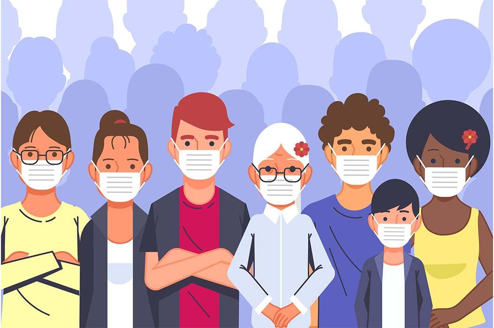
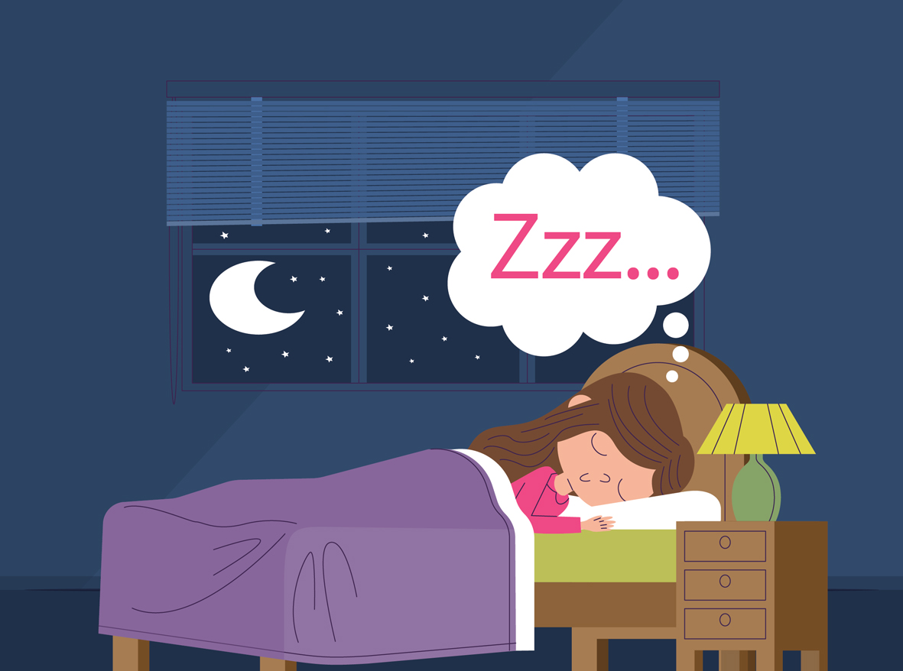
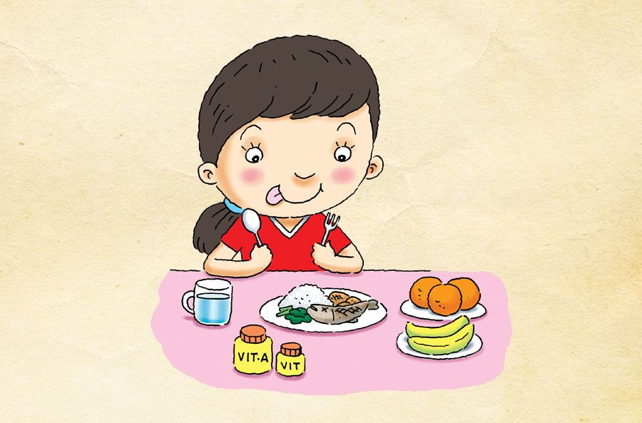
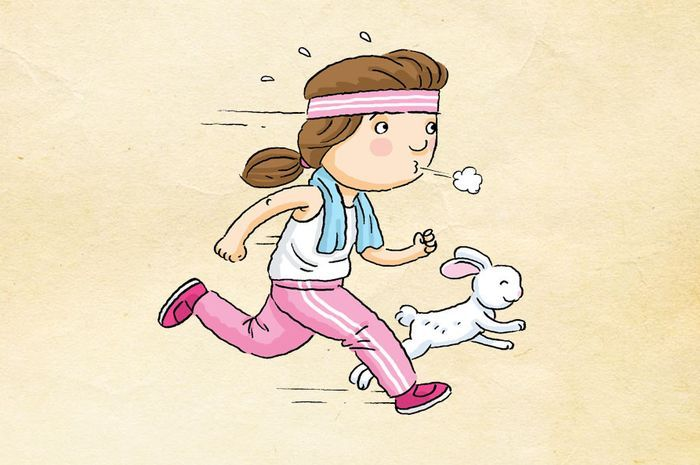
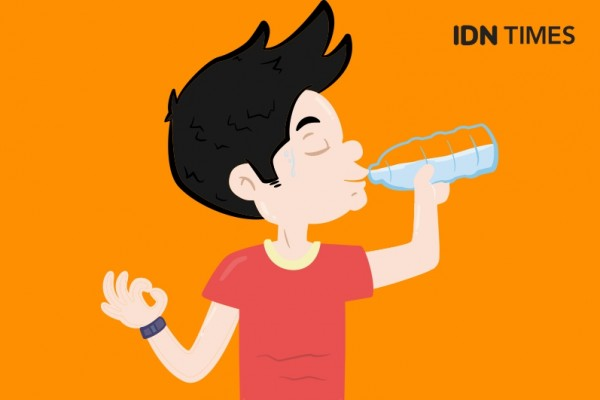
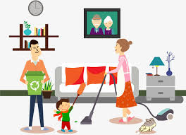

Wanna some relaxing music ? ?
Piano here
Guitar here
Where U go?


Another Related Topic :
Follow us


Introduction...
Bagi kaum rebahan masa masa pandemi seperti ini bukanlah masalah berat bagi mereka soalnya kerjaan mereka cuma tidur aja hihihi... namun bagi sebagian orang yang terbiasa melakukan kegiatan outdoor dan selalu sibuk diluar rumah kebijakan yang ada saat ini sangatlah mengganggu kawan. eits namun bagi mereka kaum kaum fleksibel hal seperti ini tentulah bukan suatu hambatan mengingat ia dapat dengan mudah beradaptasi dan mengkondisikan keadaan dengan cepat. Nah bukan itu masalahnya gaya hidup setiap orang pastilah akan berubah karena pandemi ini dan yang terpenting gimana kita terus bisa sehat. masa mau aiajak jalan doi tiba tiba drop kan gaasik. karen itu kita harus selalu menjaga dan merawat tubuh kita supaya tetap fit dan selalu sehat kawan...
Indonesia sendiri, mulai menyatakan terdampak covid dan pandemi ini sudah sejak awal Maret 2020 lalu kawan dan karena virus ini berbagai aspek kehidupan semua orang diindonesia bahkan didunia berubah drastis, baik yang terdampak virus covid-19 ataupun tidak, terutama perubahan yang signifikan karena adanya kebijakan pembatasan sosial berskala besar seperti dilarang berkerumun lebih dari 5 orang yang menyebabkan kegiatan sekolah maupun pekerjaan dilakukan di rumah (study and work from home). Ada kalanya kita merasa tertekan, stress, ataupun suntuk dengan rutinitas yang itu-itu saja mengingat gaya hidup kita sangatlah berbeda setelah adanya kebijakan saat pandemi ini Bahkan hal itu menyebabkan penyakit bagi beberapa orang karena pandemi yang tak kunjung usai. mulai dari penyakit yang menyerang fisik maupun non fisik namun bagi kaum kaum tanpa doi anda bersabarlah dan tidak usah berpura pura sakit aplagi sakit hati eh?!
Pada intinya kita harus selalu menjaga diri kita. hal termudah dan termurah yang mulai apat dilakukan adalah dengan mengubah gaya hidup kita dengan menerapkan gaya hidup sehat kawan. hal ini berlaku bagi siapapun kawan tidak peduli anda kaum rebahan anda kaum siuk ataupun anda kaum apapun itu. intinya kita harus bisa menyesuaikan dengan keadaan agar kira senantiasa sehat dan selamat. lah terus bagaimana caranya min katanya mudah dan murah?? sabar dong berikut beberapa cara langkah-langkah serta tips and trick hidup sehat yang dapat dikakukan saat pandemi
- mentaati protokol kesehatan
- Tidur cukup
- Makan makanan yang bergizi
- Olahraga rutin
- Minum air putih yang cukup
- Menjaga kebersihan
- Melakukan hobi

Dimanapun dan kapanpun selalu ingat untuk menjaga diri sendiri dan orang terdekat dari virus covid-19. Menghindari kerumunan, memakai masker atau pelindung wajah sejenisnya, dan rajin mencuci tangan harus selalu diterapkan dalam kehidupan. Mencegah lebih baik dari pada mengobati.

Dengan diberlakukannya psbb atau pembatasan, study and work from home digalakkan oleh pemerintah, bukan berarti kita tidak memperhatikan jam tidur kita. Kesalahan besar jika jam tidur berkurang hanya untuk melakukan kegiatan yang tidak berguna. Untuk menjaga daya tahan tubuh dan stamina di hari berikutnya, sebaiknya tidur dengan cukup setiap hari. Waktu tidur yang cukup dalam sehari adalah minimal 7 jam..

Seringkali kita abai dengan makanan yang masuk ke dalam tubuh kita. Meskipun sibuk dengan pekerjaan atau kegiatan, kita harus memperhatikan kandungan gizi yang ada di makanan kita, sebaiknya jangan terlalu sering makan makanan siap saji dan makanan yang belum matang sempurna. Makan sayur dan buah setiap hari akan membantu menjaga asupan gizi yang baik dalam tubuh kita.

Olahraga tidak harus dikakukan setiap hari, rutin dalam konteks ini adalah satu minggu dua kali atau jika tidak ada waktu luang bisa dilakukan satu minggu sekali. Sekadar untuk meregangkan otot dan memberikan efek bugar pada tubuh, olahraga sangat dianjurkan apalagi saat pandemi ini. Contoh olahraga yang dapat kita lakukan di rumah yaitu senam, yoga, angkat beban, lari-lari kecil, melakukan peregangan otot dengan gerakan push up, sit up, plank, dan gerakan semacamnya.

Dalam sehari, minimal minum 8 gelas atau setara dengan 2 liter. Dengan minum air yang cukup maka kebutuhan akan cairan dalam tubuh kita akan terpenuhi, bermanfaat untuk melancarkan metabolisme dan pencernaan, meningkatkan konsentrasi. Apalagi untuk wanita, minum air yang cukup sangat bermanfaat dalam kecantikan alami, seperti untuk menjaga kantung mata agar tidak menghitam.

Lingkungan yang bersih akan membawa kehidupan yang sehat pula. Dengan menjaga kebersihan seperti mandi dua kali sehari, rajin membersihkan rumah seperti toilet, tidak menimbun sampah, dan selalu menyemprot disinfektan pada bagian rumah tertentu yang rawan tertempelnya virus maka akan mengurangi resiko penyakit dalam tubuh.
Untuk mengobati stress dan tekanan yang diakibatkan pandemi, coba saja untuk melakukan hobi yang bermanfaat. Dengan itu, rasa bosan akan hilang dan waktu tidak terbuang sia-sia untuk memikirkan kapan pandemi akan usai. Hobi yang bisa dilakukan di rumah seperti, berkebun, olahraga, membaca buku atau novel, bermain alat musik, memasak, beternak dan hal lainnya.
Kesimpulan~
Jadi ya seperti ini beberapa cara yang dapat dilakukan dengan mudah dan murah. namun meski mudah serta murah beberapa cara diatas kadang susah lo untuk dilakuin eh susah apa kitanya yang males ya hihi... So kita coba dulu aja dan coba dirutini apapun hal yand menjadi rutinitas tidak akan susah untuk dilakuin namun kita perlu memulainya dahulu meski susah harus dipaksa hihi..
Tapi jangan mentang mentang sudah bisa merutini gaya hidup sehat terus kita lalai akan mentaati prokes yang dibuat pemerintah kawan bagaimanapun juga semua kebijakan pasti ada tujuannya. Jadi semoga tips diatas dapat bermanfaat. Terima kasih telah menyimaknya, semoga kita semua bisa tetap terjaga dari virus covid-19 ataupun penyakit lain. Stay Safe, Stay Health, Stay Happy.